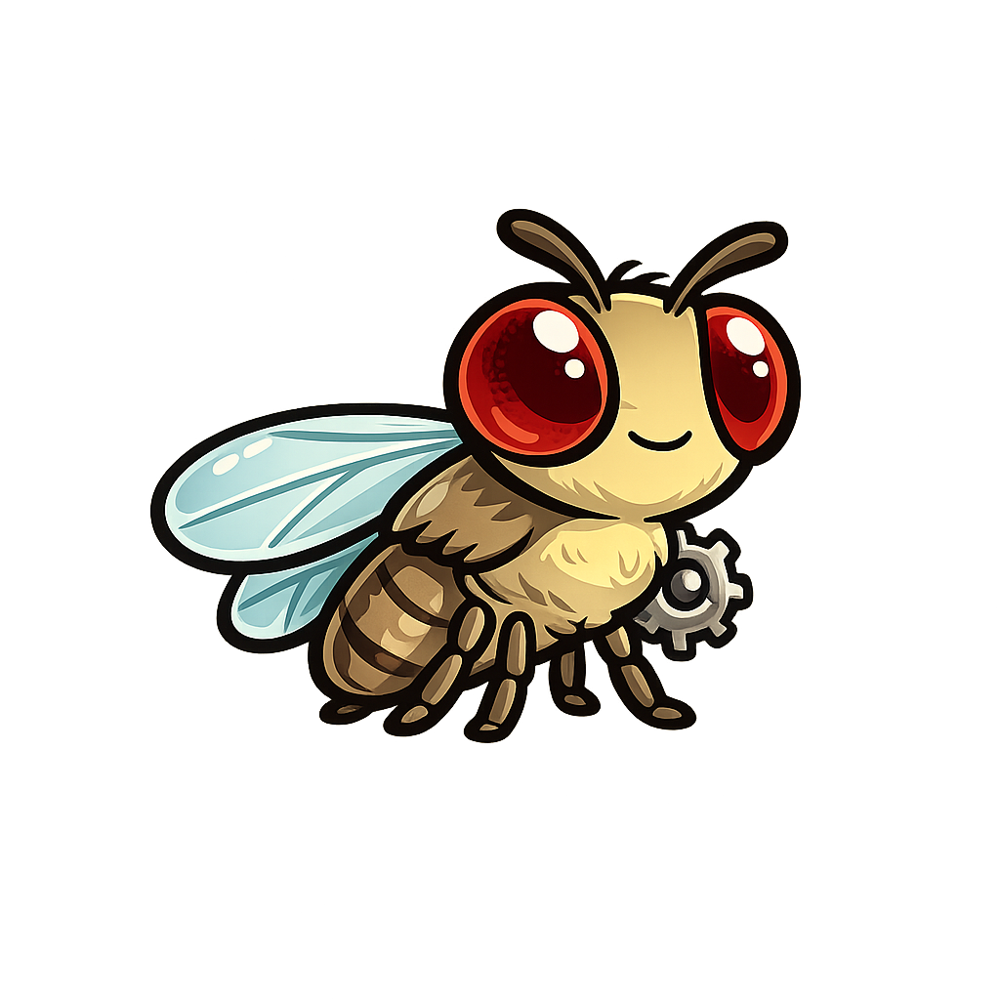

Award-Winning: Automated Drosophila Sorting System
CompletedBuilt for Clemson University Institute for Human Genetics. A trained AI model classifies sex and visible damage while the system sorts and records analytics on a Raspberry Pi 5.
My role: PCB integration, Raspberry Pi setup, remote control, motor control, GUI work, and shared software development.
Highlight: People's Choice Award, Senior Design II Showcase, April 22, 2026.